An independent platform in development
Recover through evidence. Build to endure.
Project Sun Rock connects three distinct paths: protecting rights and assets through a verifiable record, preparing responsible commercial opportunities, and developing a legally separate public-interest initiative.
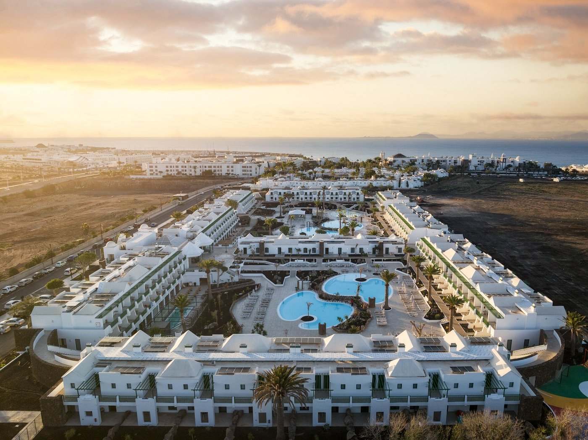
Controlling criminal allegation · five private actors + Administrator + Judge
Five actors, the Insolvency Administrator and the Judge: separate functions, one chain that must be proved.
Gil Marer directly accuses five private persons of having formed, by 2018 at the latest, a coordinated de facto or shadow-administration structure over Luchy Playa Blanca’s patrimonial sphere and the integrated hotel platform. He separately attributes affirmative acts, commissions and omissions to the Insolvency Administrator and the Judge which allegedly enabled, preserved and consolidated the mechanism.
Main view of the economic mechanism, its five private actors and its two institutional control points.Controlling criminal formulation · published by Gil MarerThe allegation is not mere passivity: it alleges instruction, execution, enablement, adoption, ratification and sabotage of the exit.
The accusation connects debt and voting, access and security, keys, maintenance, works and valuation, information, insolvency strategy, operation, income, title and outcome. It is a direct allegation, not a judgment or proof of disbursement or common purpose.
Verified minimum dateAttributed direct allegationMandatory contrary recordDecisive proof outstanding
Identified private perimeter · 5
Five alleged de facto or shadow administrators within a functional chain
Gil alleges coordinated action but does not automatically attribute every act to all five. Function, authority, knowledge, instruction, intent, benefit and causation require person-by-person proof. Family or business association is not a substitute.
Locked minimum dates establish involvement no later than the stated date; they do not claim that it was the real first day.
Insolvency Administrator and Judge: images, roles, commissions, omissions and boundaries
They are not a sixth and seventh private actor. The matrix requires each private act to be linked to the knowledge, power/duty, affirmative act or omission and consequence attributed to each institutional node.

Insolvency Administrator · fiduciary gatekeeper · Concurso 36/2012Francisco de Borja Rodríguez-Batllori Laffitte
His relevance depends on what he verified, requested, authorised, transmitted, implemented, adopted, ratified, tolerated, reported, preserved or attempted to reverse while administering LPB’s estate—not on personally executing every private act.
Alleged affirmative acts / commissions
- Using LPB’s majority to advance the 18 May 2018 Community security/access route.
- Participating in emails, meetings, requests and authorisations used for access, surveillance or maintenance.
- Later adopting or ratifying the result and using Community debt, certificate or calculation inputs.
Alleged omissions
- Failing sufficiently to delimit and supervise security, access, keys and maintenance.
- Failing after notice to recover control, protect the property perimeters and require an account.
- Failing to complete or preserve the finance-backed exit or fully report the alleged material change to the Court.
Gil Marer’s direct allegation: the Administrator supplied and used the authority route, coordinated through emails and meetings, authorised access and measures, adopted or ratified results, and omitted delimitation, supervision, restoration and accounting, thereby knowingly enabling the alleged de facto administration.
Mandatory contrary record: the Administrator denied ordering the principal lock takeover and described narrower maintenance/supervision authority. Scope, first notice, capacity, duty, knowledge, intent, causal contribution and every protective or restorative measure require proof.

Judge · supervision and effective judicial protectionAlberto López Villarrubia
Gil says the issue is not merely adverse rulings. The test is knowledge → competence → available remedy → act, refusal, closure, delay or omission → effect on the asset, operation, exit and non-estate rights.
Alleged affirmative acts / commissions
- Issuing rulings, refusals or procedural directions that Gil alleges preserved or legitimised the private-control result.
- Maintaining a procedural course that did not give effect to the financeable exit after the June 2018 professional notice.
- Leaving control, title, rescue and causation unreconciled in ways Gil characterises as affirmative judicial enablement.
Alleged omissions
- Failing to provide timely effective protection against the alleged material change of control.
- Failing to preserve the operating hotel and ONA, bridge/bank-finance or sale routes.
- Failing to require a complete account of access, locks, security, works, income and control, or reverse the result while a remedy allegedly remained.
Gil Marer’s direct allegation: rulings, refusals, evidential closures, delay and omissions preserved the private mechanism and sabotaged or frustrated a developed, multi-route, finance-backed exit. Gil characterises this as knowing judicial prevarication in the legally applicable forms.
Mandatory contrary record: Irigoyen’s report is not a judicial minute; the routes had conditions; the 26 June 2018 suspension, 24 October 2019 non-validation and partly favourable 2021 aspects are material. An adverse ruling, error or delay does not by itself prove prevarication, purpose or causation.
Alleged private conduct → Administrator commission/omission → judicial act/omission → proof needed to close the link
Each row preserves the direct allegation and prevents one person’s acts being transferred automatically to another. An individual documentary bridge is required.
Private actorAlleged private function/conductAdministrator link: acts, commissions and omissionsJudicial link: acts and omissionsBoundary and decisive proof
Francisco Mario Matos MatasCommunity administration, records, debt/voting, custody, security, accounts and information.Gil links the Community–security route, meetings and debt/certificates with failure independently to verify authority, scope and accuracy and failure to restore or account after notice.Gil links rulings, refusals, closures and delay with Community authority, debt/voting, access and effects remaining unresolved.Native instructions, provider orders, exact physical role, knowledge, purpose and benefit. It is not proved that FMMM procured a judicial decision.
Antonio Cogolludo RojasAuthority relay and alleged direct participation in security, access, keys and 7 June implementation.Gil links the security request/ratification with failure to delimit the mandate, supervise access and reverse the alleged excess after notice.Gil links the lack of examination and remedy concerning mandate, providers, presence and instructions with consolidation of the result.Exact communications, mandate, security/locksmith orders, presence, knowledge and intent. Procurement or knowledge of a judicial decision is not proved.
Shaila María Cogolludo RamosPamanil/Community administrative continuity, communications, treasury, accounts, voting and possible individual enablement.Gil links use of debt, minutes or certificates with failure to verify authorship, capacity, accuracy and effect or separate her personal conduct.Gil links closures or failure to produce native records with the absence of person-by-person attribution.Exact 2018 instruction/presence, documents, authority, knowledge, benefit and intent; family or corporate acts do not transfer automatically.
José Daniel Acosta MatosPlanning, prior approaches, creditor/project route, finance, future operation and outcome.Gil links emails, meetings, authorisations and liquidation positions with the alleged credit/project-to-control bridge, without separating creditor rights from whole-hotel authority.Gil links professional notice of the exit with later decisions and omissions allegedly preserving control/project and blocking institutional dependencies.Native communications, mandate and the planning-to-operative-order bridge. His 7 June physical presence and procurement of judicial decisions are not established.
Laura Patricia Acosta MatosCAM legal/insolvency role, access, alleged direct participation and instruction on 7 June, and later continuity.Gil links entry authorisations and the security/maintenance route with adoption or failure to reverse after a forced door and changed locks. Exact Administrator–LPAM communication must be produced.Gil links lack of protection, investigation and remedy concerning the contemporary attribution and later continuity with the consolidated result.Mandate, presence, exact instruction, call/message records, knowledge and purpose. Improper contact, procurement or judicial knowledge by LPAM is not proved.
No row declares guilt. The direct allegation is preserved; every link requires proof of capacity, personal act, knowledge, duty, intent, causation and benefit. The 2018 provisional dismissal and confirmation, the Administrator’s denial, CAM’s valid credit/titles, later adjudication and every corrective judicial act must be read within their exact scope.
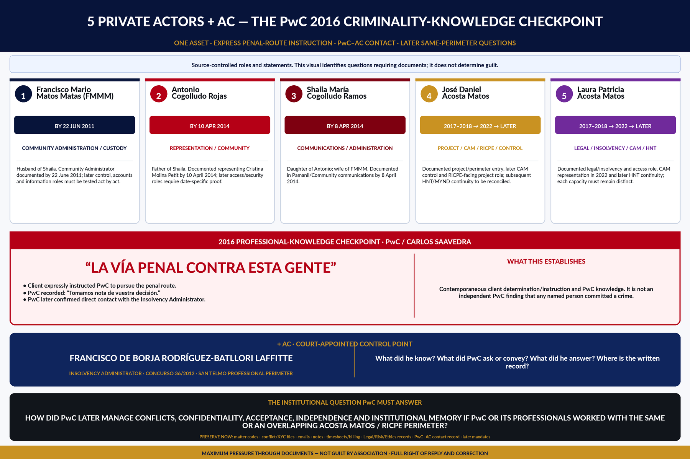

CRIMINAL-MISUSE THESIS · DOCUMENT-BASED · NOT A FINDING
The Calificación record requires a separate investigation.
The present record supports a serious, document-based investigative thesis: materially excessive Administrator allegations, a severe defective two-page Fiscal opinion, DI 248 circularity, judicial adoption of selected adverse propositions, and possible benefit to the Acosta Matos perimeter.
Our positionThe sequence requires an independent test of possible responsibility inversion and diversion of scrutiny.
Appeal boundaryRPL 2523/2025 must be decided only on its record, pleaded grounds, adversarial process and law.
The essentials first
The case in 60 seconds.
A professional plain-language entry point. It does not replace the dossier or its sources: it lets readers understand the sequence first and verify every document afterwards.
- 1. Fragmented titleThe certificate CAM supplied in July 2021 identified 262 properties: 54 held by CAM, 190 by LPB and 18 by third parties.
- 2. Promotion before titleSun Park was promoted to investors in 2020; the deed conveying the enumerated insolvency properties to CAM was not executed until 21 February 2022.
- 3. Formal noticeThe title, marketing and investor objection entered the insolvency case in February and June 2021, was circulated in July and joined to the file in September.
- 4. Response without reconciliationCAM and the insolvency administrator sought exclusion of the new chronology; the judge later confirmed admission but held it irrelevant without identifying the requested proprietary reconciliation.
- 5. Operative outcomeIncompatible October orders were followed by January clarification, February certified copies and deed, and April 2022 registration in CAM’s favour.
The accusation and question in one sentence.Gil Marer alleges that five actors exercised de facto or shadow administration over debt, voting, access, security, project, operation and income, enabled by acts and omissions of the Administrator and judge. Which contemporaneous document reconciled that material authority with fragmented title, private units, the funded exit, 2020 promotion, adjudication and later whole-project operation? Produce it, identify who verified it, or state formally that no such record has been located.
START WITH YOUR ROLE
One record; four ways in.
You do not need to read everything to begin. Choose the route matching your responsibility; each returns to the same sources, boundaries and corrections.
01 · Public authorityResolve by competenceFacts, notice, duty, finite question and the document capable of closing each point.Open the institutional clean room →
02 · Journalist or researcherVerify before publishingChronology, controlled figures, primary sources, contradictions and attribution language.Open the traceability guide →
03 · Owner or affected partyFollow assets, rights and incomeSeparate perimeters, restitution objectives and routes for responsible evidence.Open recovery objectives →
04 · Professional or funderAssess responsible collaborationMandate, independence, conflicts, source of funds and minimum evidence.Open collaboration criteria →
Perimeter control
One visible hotel. Five legal perimeters that must not be collapsed.
The experience improves when every reader knows from the outset which asset, right or function is under review. These categories prevent credit becoming ownership, security becoming possession or operation becoming title.
LPB · insolvency estate190 properties in the 2021 certificateLater award and deed; reconcile property by property.
CEXP · businessHotel operation, customers and platformEnterprise value is not reducible to the underlying real estate.
CommunityGovernance, charges, voting and securityCommunity authority does not equal title to every property.
Matkator and third partiesRights outside the LPB estateProperty and operating rights require separate treatment.
CAM54 properties and secured-credit positionPotentially valid rights; not automatic title to the whole hotel.
The whole story · read backwards
The final outcome does not prove its own legitimacy.
MYND Yaiza is the visible result. To determine whether it rests on valid title, authority and decisions, the reader must move backwards—document by document—to origin. A later award or registration does not retroactively make earlier ownership, availability or consent claims true.
- 2022–nowSee finance and support
Visible result: hotel, finance and value
The 21 February 2022 LPB deed, later registration, HNT/MYND, RIC financing and regional support form the economic and operating outcome. They must be audited against the real property perimeter, Matkator and third-party rights, licences, eligibility file and beneficiaries.
- 2021–22See recipients and receipt
Notice before consummation
CNMV and AEAT received communications in January 2021. The title, RIC, investor and estate-risk objection entered the insolvency case in February; the 12 and 22 March orders document notification and referral to the Public Prosecutor. CAM replied and in July supplied a certificate distinguishing 54 CAM properties, 190 LPB properties and 18 held by third parties. Institutional knowledge preceded the outcome.
- 2020Compare the versions
The investor image preceded whole-title authority
The 4 June brochure identified CAM as Sun Park's “title-holding company”, while including an “under study” project caveat. In the 11 November webinar the three complexes were said to have been bought with own funds, to belong to CAM and to be unencumbered; Sun Park was presented as 220 apartments, €12 million, works in Q1 2021 and funding by year-end 2021. Judicial authority for the LPB award did not arrive until January 2022.
- 2018–19Open the 7 June dossier
Material control before whole-property title
On 7 June 2018 a documented material takeover used a broken lock, chains, padlocks, replaced cylinders, security and exclusion. No CAM possession or eviction order has been located. The 24 October 2019 order also records the separation and sale of 31 LPB properties through the ob rem operation, without prior judicial authority, and that the Court did not validate it.
- 2017–18Open the title control
Entry through credit and particular properties—not the whole hotel
CAM entered as assignee of the mortgage claim and was judicially identified as a creditor. A claim, an expected transfer in payment, material possession or some separately held properties did not equal title to stayed LPB properties, Matkator units, the Thompson/Fernández Cox units or elements requiring unit-specific consent.
- 2016See the PwC record
Specialist knowledge of the real architecture
The 26 April meeting identified owners and representatives of private units. PwC's July emails confirm its team was preparing a challenge for Thompson and the Fernández Cox brothers, with Matkator to pay the fees. The separate 11 June Las Palmas meeting records PwC analysing 2008–2015 accounts and contracts with Community-side representatives. That position requires a property-by-property reconciliation with PwC's later RICPE role.
- 2011See the minutes record
First located Community governance matrix: debt → vote → custody → litigation
The 22 June matrix minutes record Francisco Mario Matos Matas as administrator, exclusion of LPB's vote for attributed debt, ratification of Pamanil, and the concentration of administration, maintenance, document custody and litigation. They do not prove a crime by themselves; they fix the authority mechanism and documentary route that had to be checked before later consequences were permitted.
- 2008See the 2008 origin
2008 vulnerability and alleged root cause
The unit-by-unit sale left one economic hotel across approximately 220 registered properties and created a PropCo/OpCo vulnerability; it did not erase individual title. Gil distinguishes that architecture from the root cause he alleges: non-completion or breach of the 2008 transaction by the perimeter associated, in specific acts, with Montelanza, S.L. and Molina-linked owners and its relevant later acts or omissions. The 22 June 2011 minutes are the first located Community matrix; Bankia’s enforcement and scheduled auction were later the documented immediate timing trigger for the insolvency filing. This is Gil’s causal position, not a judgment or collective attribution. Declaration 008.
The alleged flywheel
Appearance strengthens whenever the next recipient fails to return to origin.
- Disputed Community authority
- Physical and documentary control
- Whole-owner image
- Capital, RIC and support
- Works, operation and income
- Later appearance of legitimacy
Inference requiring independent investigation: if each later decision treated the previous one as proof, the outcome may have become its own circular justification. The chronology establishes finite questions and notice; it does not replace a judicial finding of criminal responsibility.
Understand
Read this chain and the five essential facts.
Return to the summaryVerify
Open the Community, title, 2018 takeover, RICPE, alerts and award controls.
Open the main dossierAudit
Follow the primary sources, boundaries, procedural states and questions put to each institution.
Enter the evidence recordBuilt · 2011–7 June 2018
The most valuable thing we built was not just a resort. It was a repeatable hospitality system.
Gil Marer and the team developed an integrated operating model around Sun Park in Playa Blanca. The property was its nucleus; the wider value came from connecting the hospitality product, community, direct customer relationships, specialist distribution and the ability to apply the operating intelligence elsewhere.
- 01AssetA conventional mass-tourism property repositioned around a differentiated guest proposition.
- 02Hospitality productShort, extended and longer stays combining flexibility, service and a home-from-home environment.
- 03CommunityParticipation, activities, companionship and local programming designed into the stay.
- 04Direct demandEnquiries, reservations, customer communications, repeat visits, referrals and word of mouth.
- 05DistributionSpecialist commercial relationships connecting defined audiences with controlled accommodation inventory.
- 06ReplicationA business system intended to be carried into further destinations and hospitality formats.
Belonging turned longer stays into a stronger product.
The 50-plus market was deliberately selected and developed as a hospitality specialism. It demonstrated the value of active participation, community, repeat behaviour and longer stays. It was one proven application of the model—not a limit on the guest profiles of future hotels.
The commercial platform operated on both sides of demand.
From 2012–2014 the team expanded direct-to-consumer distribution, reservations, telephone support and customer acquisition. Contemporary 2014 communications record reservations, sales scripts, advertising and digital media; later specialist relationships added routes through commercial partners. Together these capabilities connected a hotel product with its end customers on both a retail and wholesale basis.
Publication discipline: the contemporaneous archive also contains internal historical performance and reach figures. They remain outside this public summary until reconciled with source systems and independently supportable.
The platform
Three paths. Clear boundaries.
The umbrella project coordinates experience, knowledge and relationships without confusing a private recovery effort, future economic activities, and a planned non-profit entity.
Recovery
A documented effort to protect rights, clarify facts and pursue proportionate legal and commercial outcomes.
Examine the approachFuture
Selective asset and project opportunities where governance, traceability and value creation can be designed from the outset.
View criteriaPor Derecho
A planned foundation to promote access to justice, institutional integrity and civic capability, subject to incorporation and registration.
Understand the boundaries01 · recovery
An allegation of economic criminality requiring a documentary answer. A value chain that must be reconciled.
Attributed criminal theory; not a judicial finding. Gil Marer and Aweswell allege one continuing economic-criminal enterprise, advanced through successive adoption and divided functions. This formulation does not itself prove a statutory criminal organisation or group under Criminal Code Articles 570 bis or 570 ter, an original pact, any person’s participation or guilt. Each actor and each offence require separate proof of their historical elements, conduct, capacity or duty, knowledge, intent where required and causal contribution, together with contrary material. This is only a factual allegation of connection: it does not characterise the conduct as a continuing or permanent offence or alter completion, any participation window or limitation period for any specific offence.
- 1. SourceAuthentic decisions, pleadings, registers, contracts and communications.
- 2. FactA point supported directly by an identified source.
- 3. AllegationA position clearly attributed to the person making it.
- 4. AnalysisAn inference or question kept separate from established fact.
- 5. StatusAn official outcome, pending step or absence of a merits decision.
Express allegation
The allegation is capture, dispossession and commercial legitimisation.
Gil Marer and Aweswell allege that, from about 2011, private actors captured and instrumentalised the organs of the Sun Park owner community; converted disputed community authority, debt, access and voting machinery into practical control; displaced LPB, Matkator and the historic hotel business; and later used the resulting appearance of authority in insolvency, property, investor, RIC, works and hotel-operation structures.
They further allege that the insolvency administrator acted disloyally and in conflict against the company and estate he was required to protect, facilitating or failing to stop value moving towards the Montelanza, S.L./Molina dissident perimeter, its representatives and later Acosta Matos interests. They allege that some public and professional actors then failed to investigate, disclose, preserve or correct matters despite notice.
The testDocument → role → representation → consequence → contradiction or missing authority → answer required.
The boundaryThese are serious, unadjudicated allegations. Role, relationship, wealth or later commercial success alone does not establish criminal responsibility.
What recovery must account for
One event affected several legal and economic perimeters.
The recovery position is not one undifferentiated property claim. Each right, loss and remedy must be allocated to its actual owner or rights-holder, supported by evidence and valued without counting the same economic loss twice.
LPB's registered property, estate income, physical condition, its interest in the unitary hotel and the value of the funded exit alleged to have been frustrated—subject to the insolvency estate's standing and control.
Property, use, consent, income and physical effects outside LPB's insolvency estate require their own title and claimant analysis; they cannot be absorbed merely by practical proximity to the hotel.
Possession, bookings, operating structures, equipment, contracts, receivables and the economic value of operating the hotel must be traced to the entity or structure that held each right.
Parent funding, direct contractual or creditor rights, impairment and recovery costs require separate treatment from losses belonging to subsidiaries or other operating entities.
Direct booking capability, specialist distribution, commercial relationships, brands, domains, systems and lawful control of customer communications are distinct from the underlying rooms.
Community goodwill, reputation, repeat and referral demand, expansion capability and evidenced lost chances may form part of the wider analysis, with causation and probability tested rather than assumed.
Show the chain · follow the value
The value did not disappear. It moved.
Gil Marer alleges that an unlawfully captured Community apparatus became the bridge by which disputed control was converted into a financeable project, a rebuilt hotel and continuing income. Each transition requires legal authority, a contemporaneous record and an identified beneficiary.
- 01 · titleWhat was owned?Reconcile every unit, company, credit and economic right at each date.
- 02 · authorityWho could bind the Community?Produce statutes, appointments, mandates, notices, quorums and conflicts.
- 03 · debt & voteWho created the leverage?Test debt production, voting entitlement, dissent and the alleged 23% apparatus.
- 04 · accessWho authorised possession?Identify the legal bridge for inspections, plans, security, entry and operational exclusion.
- 05 · valuation & worksWho changed the asset story?Reconcile deterioration claims, ECO values, replacement cost, permits and contractors.
- 06 · capitalWhat made it investable?Produce the RIC, adviser, bank, due-diligence, conflict and release-of-funds file.
- 07 · operation & incomeWho monetised the result?Trace the opening, operator, public incentives, revenues, fees and distributions.
- 08 · beneficiaryWho ended with the value?Map successors, related parties, economic benefits and any unreconciled enrichment.
A clean chain protects clean actors.
An opaque chain protects only the unreconciled outcome. The answer is disclosure, preservation and lawful scrutiny—not intimidation, harassment or extra-legal action.
The named private-actor perimeter
Five people recur at critical transfers of authority and value.
Gil Marer alleges that José Daniel Acosta Matos, Laura Patricia Acosta Matos, Francisco Mario Matos Matas, Antonio Cogolludo Rojas and Shaila María Cogolludo Ramos performed connected functions in the Community-to-project chain. The cards state the alleged and documented relevance of each person; they do not represent a conviction or final judicial finding.
Identities and relationships locked without fabricating a corporate bridge: later public records verify two distinct clusters: Francisco Mario Matos Matas and José Daniel Acosta Matos appear in ORION RENTAL SOCIMI, S.A./AGM governance; Antonio Cogolludo Rojas and Shaila María Cogolludo Ramos appear in official Pamalexsha, Noalpa and Santa Lucía records. No independent public corporate source has been located placing FMMM, Antonio and Shaila in the same company or making Orion the Sun Park bridge. The alleged bridge rests on the case corpus: family and Community/Pamanil roles, later Pamalexsha/AGM material and specific acts. Gil Marer alleges functional continuity and common purpose; each communication, instruction, authority, payment, benefit and intent requires separate proof.
Two institutional levels · one causal chain
Insolvency administrator and effective judicial protection
The allegation distinguishes the functions. The insolvency administrator was LPB’s fiduciary gatekeeper; the court exercised supervision and protection in the insolvency. Neither office is treated as neutral merely because it is public or court-appointed, and culpability is not assumed.
Insolvency administrator · fiduciary gatekeeper
Francisco de Borja Rodríguez-Batllori Laffitte
His relevance does not depend on having personally executed every private act. It depends on what he verified, authorised, transmitted, tolerated, reported, preserved or attempted to reverse while administering LPB’s estate.
The 2018 record contains a sequence concerning codes, access, maintenance and security. Gil Marer maintained at the time that those functions and the hotel operation belonged to CEXP and asked him to verify statutes, books, accounts, contracts and debt. That was his contemporaneous position: Order 804/2018 did not recognise the possession CEXP asserted in those proceedings. The judicial statement of 31 July 2018 adds questions concerning entry authorisations, a forced door and broken locks.
Accountability question: once the separation among LPB, CEXP, the Owners’ Community and third parties had been raised, what concrete measure protected each perimeter, and what restitution, inspection, recovery of fruits or quantification of loss followed?
Gil Marer has advanced civil, insolvency and criminal allegations concerning this conduct. No criminal conviction or final finding of individual liability is stated.
Effective judicial protection · action and omission
Alberto López Villarrubia
Gil Marer’s position is not limited to disagreement with adverse rulings. It asks whether insolvency supervision actually protected the asset, productive unit and limits of the proceeding while external events altered control, possession, access, works, value and competition.
The public test is: knowledge → jurisdiction → available remedy → decision or omission → effect. The 2018 funded exit, loss of material control, OB REM and its non-validation, alleged demolition and access restrictions, requested inspection/expert evidence, competition for the asset and the 2022 adjudication must be reconciled.
Boundary: an order concerning LPB could not, merely through practical spillover, create title over Matkator, determine CEXP’s disputed authority or convert de facto possession into ownership. If it affected those planes, the individual legal bridge must be identified.
Gil Marer maintains that specified facts and decisions cross the threshold requiring criminal investigation. This is a formally advanced allegation, not a finding of guilt.
Action and omission can be legally distinct and causally convergent.The question is whether a positive act—or failure to use an available protective measure—allowed the same state of affairs to consolidate, affect the estate and extend into rights outside the insolvency.
The image and the technical file
The plans were on the table. Authority to act over all Sun Park was not.
For Gil Marer, this image captures the appearance of impunity he alleges: four members of the family-business perimeter present the transformation of patrimony whose possession, title, Community representation and chain of authority remained disputed. The photograph alone proves no crime, title or mandate. Its relevance arises when it is tested against the visado project, the Yaiza file and records obtained through public-information access.
The current Acosta Matos project page assigns three functions in the same project within its own perimeter: Hotel New Trend as owner, Grupo Acosta Matos as operator and José D. Acosta Matos as architect. That public representation is not proof of title; it makes reconciliation of mandate, conflict, finance and benefit indispensable.
Marer alleges that the technical project converted unlawfully captured Community authority into an institutional appearance usable for works, hotel operation, finance and investment. The professional body has not determined that allegation: the complaint asks it to preserve and examine professional traceability, not to adjudicate title or criminal liability.
“I can enter by force because I already own the complex. And I can do it the hard way, or I can do it the easy way… in two months they disappear and we come in.”
The certified Spanish transcript calls the speaker “Interlocutor 1”. In later judicial evidence given under a duty to tell the truth, Miguel Ángel Barreiro Cano identified José Daniel Acosta Matos as the caller and visitor in the same sequence. On the combined record, Gil Marer attributes the words to JDAM. A contemporaneous email dates the original conversation to 26 February 2018; Logalty/Burovoz certifies custody/replay of the file on 22 March 2018. The attribution remains open to rebuttal by the original audio, line and voice evidence. English translation is editorial.
A person within Gil Marer's business perimeter states that LPAM said she “had the personal telephone number of the Judge”, “spoke daily with him and the Insolvency Administrator” and could call him at that moment.
Signed statement dated 28 July 2026, based on direct recollection. The identity is withheld on this public page for privacy and family-safety reasons; the original and the identity are preserved for competent authorities, courts and legitimate adversarial testing. The witness expressly says they cannot technically verify ownership of the calls or the truth of words LPAM allegedly attributed to the Judge. It is not presented as proof of improper judicial contact, but as a witness account requiring preservation and testing of records. English translation is editorial.
The missing proof is concrete.Produce the professional engagement, valid Community mandate, titles and limits for every unit and common area, native plan versions, applicable licence, Yaiza correspondence and the chronological reconciliation of access, works, finance, opening and benefit. If the chain was lawful, those records should be capable of proving it.
Professional accountability · insolvency perimeter
Who identified, disclosed and managed the conflicts?
A court-appointed insolvency administrator is not placed here beside the five private actors as if the roles were identical. Francisco de Borja Rodríguez-Batllori Laffitte occupied a distinct fiduciary and court-supervised position in Concurso 36/2012. Gil Marer and Aweswell allege disloyal administration, conflict, omission and enablement; those allegations remain unadjudicated. The immediate public-interest test is narrower: what did he know, what authority did he verify, what did he do or not do, what professional relationships existed, and what was disclosed to the court and the estate?
Administrator record · facts, allegations and status
Challenged acts and omissions: one record, not atomised episodes.
Gil Marer and Aweswell characterise the combined pattern as disloyal administration and facilitation of the CAM-favouring result. This table does not turn that accusation into a judgment: it identifies documented decisions, alleged omissions, effects and routes still pending.
A contemporaneous administrator email refused authority for claims against Community office-holders, advisers and over the swap on cost or viability grounds, and noted that the last meeting had reduced fees retroactively. The decision is documented; its diligence, alternative and effect remain disputed.
The minutes place LPB at 72.976%, represented by the administrator, but only 0.385% entitled to vote. At LPB/the administrator’s request, security was authorised to control access; he later testified to authorising entry, a forced door and ratification of broken locks. None of that records a transfer of whole possession or title to CAM.
The deed separated and sold 31 LPB properties to CAM. The administrator sought validation on 20 March 2019; the 24 October order recorded the absence of prior judicial authority and did not validate the operation. Its use, registration, fruits and later restoration require reconciliation.
The administrator’s 10 June filing certified €718,663.24 as contingent ordinary insolvency credit and €427,135.05 as a claim against the estate, asking any better bidder to deposit the certified debt. The combination is documented; authority, calculation, vote, allocation and payment remain unreconciled.
The record combined secured credit, the rest of the productive unit and Community liability in the better-offer process. Aweswell and LPB also challenge the valuation used and the failure to preserve the unitary hotel operation. When works and damage were alleged, the court left estate preservation to the administrator and refused inspection/expert evidence. A property-by-property account of value, use, damage, fruits, credits and debt extinction is still missing.
Aweswell and LPB allege that the administrator took over and discontinued preliminary proceedings DPR 1041/2017 and that the full price of CAM’s credit acquisition was consequently not disclosed in those proceedings. In September 2023 he said that almost three years earlier he had authorised the financial-derivative action against CaixaBank—successor within that part of the Bankia-originated package—and that he held LPB’s exclusive representation; he simultaneously refused a power or any further proceeding in LPB’s name. Aweswell relied on Article 122 TRLC—subsidiary standing of creditors—in response to that refusal; whether it satisfied that standing is disputed. The alleged effect of DPR 1041/2017 and the merits of the resulting claims remain undecided.
The hearing listed for 6 November 2025 at 10:00 did not proceed after the opposing expert reported a cancelled flight the evening before. Aweswell did not oppose suspension because it wished to question him personally. A signed court diligence dated 6 November relisted the hearing for 28 January 2027 at 10:00. Separate witness records show that CaixaBank originally proposed the Administrator and Aweswell adhered; the content and judicial assessment of his evidence remain pending.
The claim broke the amount down as €65,217.76 in challenged liquidation remuneration, €9,504.77 interest, €31,107.46 in challenged interest on common/convenio-phase fees, and a further €5,126.98 interest. A 20 March 2025 court-office record stated that the file contained neither an exemption order nor annual-account documentation; it did not itself decide that a breach had occurred. The 21 January 2026 judgment dismissed solely on Aweswell’s standing, without deciding whether the charges were due. RPL 421/2026 was pending in the latest record reviewed.
The formal April 2025 application was rejected on standing without examining its grounds. LPB and Aweswell appealed; RPL 3304/2025 and 3319/2025 were listed as accumulated in the latest record reviewed. DP 1956/2026 was opened and provisionally closed in the same order; DIP 80/2026 is a separate preliminary file. Neither constitutes a criminal conviction or professional-discipline merits finding.
Timing correction and objective effect. At the October 2024 Valencia preliminary hearing no formal removal application was yet pending. Written reservations and instructions existed from 2019; professional consideration followed in 2020 and professional work product in 2021. No complete application earlier than the first full draft of 14 April 2025 was located in the reviewed documentary record. The correspondence also records explanations for not filing sooner: an early assessment that the insolvency judge would not grant removal at that stage; interruptions and withdrawals tied to unpaid fees or unmet retainers; the need to reconstruct the complete court record; and the later decision to obtain a record concerning annual accounts. During that interval, the same administrator remained LPB’s exclusive representative through adjudication, accounting and bank-litigation milestones. Aweswell and Gil Marer characterise the objective effect of the delay as harmful to the companies and favourable to continuation of the CAM-favouring result. Those explanations, and the professional cause, responsibility and intent, have not been adjudicated. This page does not identify current or former legal representatives because their names are unnecessary to understand the chronology.
Connected audiovisual record · 30 Nov 2021
The San Telmo interview connects Acosta Matos, clients, judicially disputed property and the Lanzarote project sequence.
The interview is a materially connected audiovisual and project record. In sequence, RIC director Enrique Guerra said that the firm placed clients into its first investment; identified the promoter as Acosta Matos and referred to the family patrimonial structure; discussed Lanzarote property affected by judicial ownership problems; described an “abandoned complex in Lanzarote” requiring exceptional replacement expenditure; and explained release of investor money against technical certificates.
Eduardo Sánchez appears as interviewer and visible recipient of those statements in a San Telmo professional video. Hearing or publishing an answer proves neither knowledge of falsity nor participation in wrongdoing. It does place Sánchez/San Telmo and Guerra/RIC–A&G in distinct record-custody and explanation perimeters: interview preparation, relationship with the guest or promoter, checks, referred clients, editing, publication and any later notice or correction.
The connection is not conjecture in a vacuum. RIC’s preserved June 2020 brochure expressly listed Sun Park and CAM; its July 2021 certificate described the fragmented title and unfinished due diligence; and Guerra’s own public RIC article said Sun Park financing was expected once the adjudication of units became final. Read together, this is a materially connected Sun Park record.
The allegation: Gil Marer alleges that the “abandoned” characterisation and the investment narrative were deliberately false, self-serving and materially misleading because they erased Aweswell/LPB’s ownership, operation and insolvency account while presenting contested value as a clean, financeable Acosta Matos opportunity. That serious allegation is unadjudicated. It should be answered with the complete project, title, conflict, client and investment-decision files—not insulated by transcript formalism.
«en el despacho… primera inversión… metimos unos cuantos clientes»
«proyecto… Acosta Matos»
«un complejo abandonado en Lanzarote»
Enrique Guerra, #UnCaféenSanTelmo · 30 Nov 2021 · preserved transcript excerpts
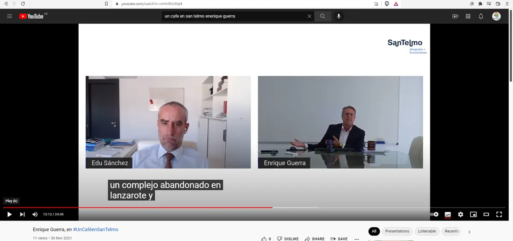
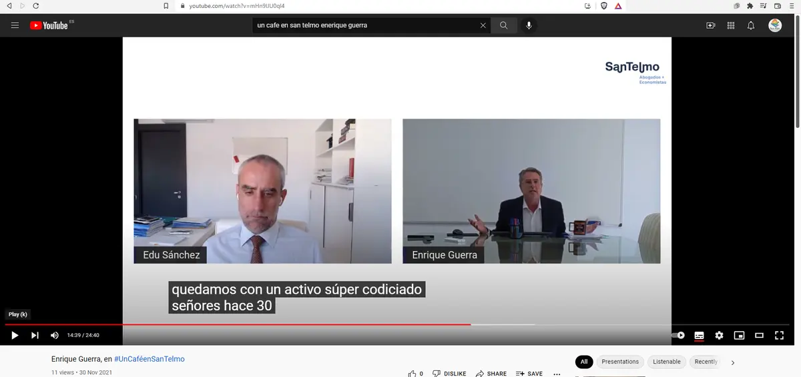
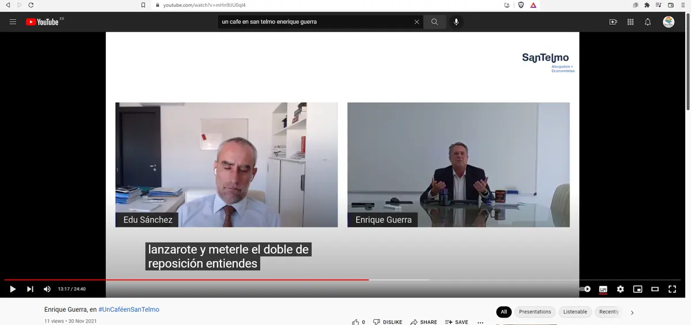
RIC began as A&G Capital; A&G Asesores was its promoting platform.
RIC’s published history says the same SCR now called RIC Private Equity Investment Partners was incorporated as A&G Capital Investment Partners, later became RIC Capital Investment Partners and then adopted its current name. A&G Asesores was a separate professional entity which, according to that history, promoted the vehicle. Guerra appears in the 2009 BORME as a professional partner of A&G Asesores Tributarios y Mercantiles; Rodríguez-Batllori’s archived curriculum says “Associate at A&G Asesores” in 2009–2010, not partner. This does not prove an undisclosed conflict. It does require the exact entity, client files, referrals, record custody and court disclosures to be identified when the RIC–Acosta Matos route intersected Sun Park.
San Telmo’s integration created a live compliance perimeter.
RSM announced the integration of three San Telmo partners and a 15-person team into RSM Spain. An ethics-channel report, reference NNR4-1025C2F66, was registered on 5 June 2026. On 9 July, RSM’s Head of Ethics & Independence said its Ethics and Deontology Committee was analysing the large documentary record and expected conclusions in September. That is evidence of an ongoing process—not a finding. The requested standard is preservation, independence from implicated offices, a defined scope and a reasoned outcome capable of being tested.
A firm is deliberately not identified while compliance runs.
One further current professional affiliation is not named at this stage. Its identity is unnecessary to understand the questions: what onboarding and conflict checks were undertaken, what was disclosed about Concurso 36/2012 and connected proceedings, and what records are now preserved? A bank, insurer, regulator, professional body, journalist or other person with a legitimate interest may request the indexed basis through the confidential channel. Silence will be recorded as silence; it will not be converted into proof.
Records that would resolve rather than inflame the dispute
Conflict searches and declarations · engagement and referral records · court disclosures · Community authority checks · title and unit-control analysis · RIC/project communications · fee and benefit records · document-preservation notices · the reasoned result of each professional review.
Material financial and governance actor
RIC Private Equity: capital, controls and the representations that made Sun Park investable.
Why it is in the record. RIC Private Equity is not included merely because its name appears near the project. Its documents supplied a regulated investment perimeter, project description, governance process and route to RIC-tax capital. A June 2020 investor brochure preserved in the evidence file listed “Sun Park” and identified Construcciones Acosta Matos, S.A. as the project company or “sociedad titular.” The document’s footnote said the projects were under study and could cease to be projects of the company; that caution did not answer the underlying title, authority or control questions.
Governance is documentable. The CNMV register records RIC Private Equity Investment Partners, S.C.R., S.A. under number 295 from 25 October 2019. It identifies Enrique Luis Guerra Suárez as secretary and later director general, and “Acosta Matos, José” as a board member from 4 November 2019. The register and webinar place Acosta Matos simultaneously within vehicle governance and the project-promoter counterparty. Gil Marer further alleges that José Daniel Acosta Matos/CAM were founders and material borrowers or beneficiaries; that broader label must be closed by the shareholder register, loan instruments, issuances and use-of-funds record—not by a name inference.
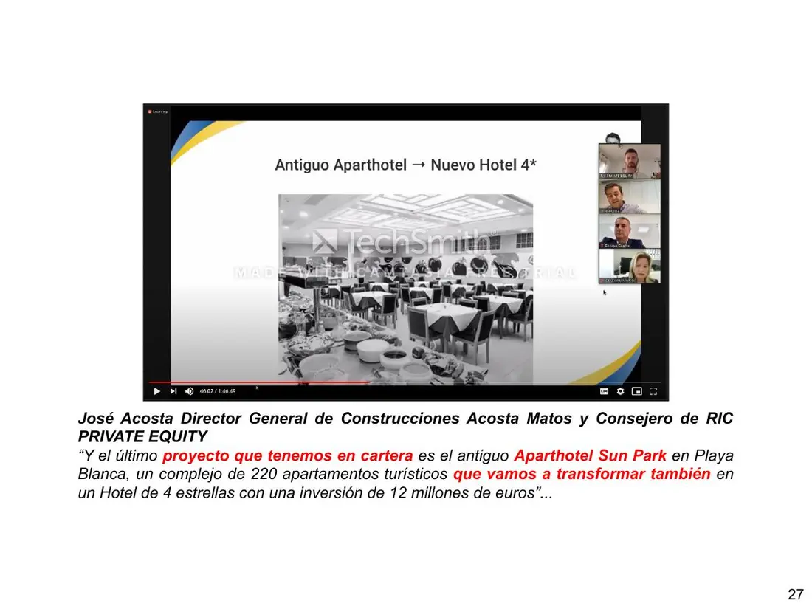
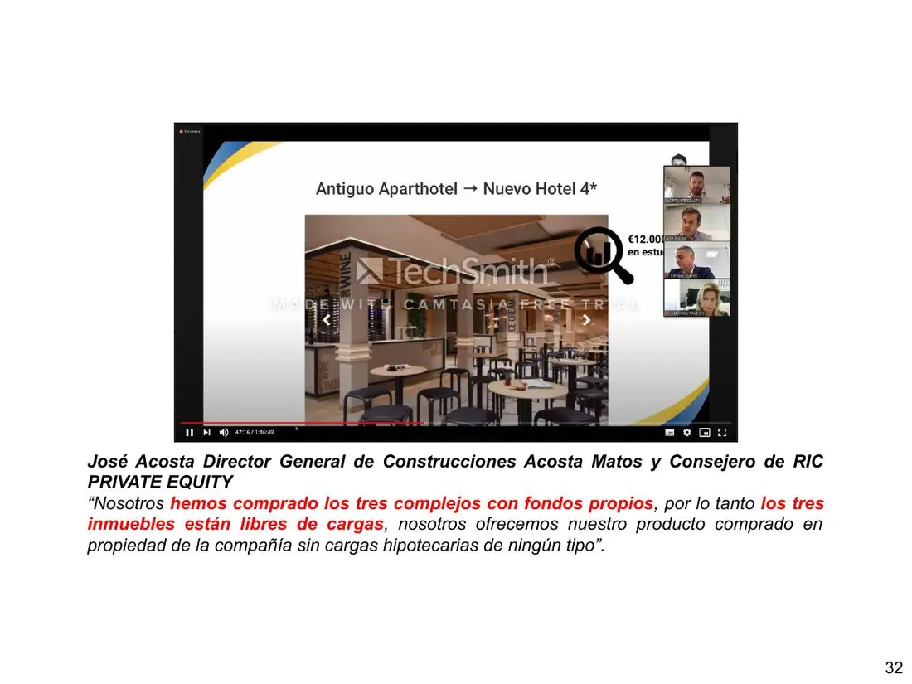
Material contradiction
What was said in 2020 and certified in 2021 cannot be read as the same picture.
The divergence alone does not establish intent or liability. But the later record now documents project-specific share issuance, materialisation and loans, making explanation of ownership, charges, knowledge and correction central rather than hypothetical.
Sun Park was presented as a 220-apartment, €12 million project in the portfolio.
No letter of intent had been signed, full due diligence had not begun, and the project had been withdrawn in January.
Produce the video, recipients, Series F/G, minutes, corrections, due diligence, Control Unit report, suitability/AEAT files, flows, GC/836/P06 aid file and property–use map.
- The representation entered the investor channel.
The brochure named Sun Park and CAM as “sociedad titular”; the webinar presented 220 apartments and €12m and stated purchase with own funds and absence of charges.
- CAM defended a materially narrower picture before the court.
It asked to exclude Aweswell’s new material, denied ever presenting itself as sole owner and acknowledged 54 units. The attached certificate identified 159 apartments and other LPB assets, 18 third-party properties, no LOI/full due diligence and January website removal.
- The capital route revived before insolvency title closed.
RICPE’s 11 February notice confirms a 29 December capital-increase resolution connected with Sun Park. The 21 February deed conveyed LPB’s listed properties, not the 18 third-party properties. The resolution, minutes, report and abstentions must be produced.
- First RIC materialisation and HNT loan.
The audited accounts state that Mynd Yaiza obtained a suitability declaration on 1 December and record Series F of 253 shares, €1,598,849.32 materialised and a participating loan for the same amount.
- Regional-incentive award.
Order HFP/521/2023 awarded HNT €3,440,914.20 against €11,469,714 of investment and 60 jobs. The award does not by itself prove payment; the individual file and controls remain requested.
- Second materialisation and express confirmation of the former Sun Park.
The accounts record Series G of 785 shares and €4,974,853.78 materialised and lent for employment. The September brochure identifies Mynd Yaiza as the former Sun Park and says RICPE financed two components.
CNMV, AEAT and the insolvency court were put on notice before the adjudication.
The 13 January communication supplied the Sun Park–RICPE brochure and representations and expressly challenged title, control and availability. The AEAT receipt proves filing; CNMV’s 2021 response proves internal referral and its 22 January 2026 response confirms supervisory actions, while stating that the material obtained did not contain RICPE’s 20 July certificate or CAM’s 21 July 2021 court filing. The 11 February insolvency filing put the CNMV complaint, brochure and webinar before the court and sought protection; the 28 June filing added public material. On 21 July CAM asked the court not to add the new documentary material, said it had never presented itself as sole owner, acknowledged only 54 units and attached a RICPE certificate counting 262 properties —54 CAM, 190 LPB and 18 third-party— with no letter of intent or full due diligence and dependent on CAM acquiring the insolvency assets. The 28 February public warning adds a public pre-adjudication timestamp. Together these records prove notice and documentary contradiction, not a merits decision by CNMV, AEAT or the court.
Knowledge was formal; so were the decisions and registered effect.
CAM and the insolvency administrator sought exclusion of Aweswell’s later chronology. The 7 September order placed the filings and exhibits before the judge. Two orders dated 15 October said, respectively, that the auction had been held and that the bidding had not even taken place. On 26 January 2022 the judge acknowledged the contradiction, treated it as cured by calling the event a “bidding appearance”, confirmed that the July documents had been admitted and held them irrelevant. CAM obtained operative certified copies; Aweswell challenged them on 16 February; the deed was authorised on 21 February and registration in CAM’s favour occurred on 20 April—six days before the challenges to issue of the copies were dismissed.
Attributed statement: “I, Gil Marer, take personal responsibility for the conclusion that the insolvency administrator and judge cannot be treated as external, passive or uninformed. I allege functional alignment of their acts and omissions with the CAM-favouring result and call for independent investigation.” This establishes knowledge, contradiction, decision and effect; it does not publish a clandestine agreement or offence as proved fact. Open the complete chain and the role of public notice →
Matkator title survives and the proprietary and public exposure is current, not historical.
The 2015 and 2016 deeds and 30 January 2025 Land Registry notes place 100% full title to properties 8584 and 8588 in Matkator S.L.; the 4 March 2026 Cadastre response identifies three references associated with its position, subject to the Cadastre’s informational status. The 2022 insolvency deed did not transfer those titles. At the same time, MYND Yaiza remains commercially offered and its official page describes the conversion as EU co-financed. Without an audited property–use–possession–consent–income map, exposure concerning use, revenue, control, valuation, investors, tax incentives and public funds remains open; this does not by itself assert that the operator presently uses a particular Matkator unit.
Bounded conclusion: on those titles and CAM/RICPE’s own July 2021 breakdown, the minimum answer is no: the integrated 2020 whole-project representation did not provide a complete and truthful title/control record. Intent, individual knowledge, the contents of each public file and legal liability remain matters for proof. Open the complete documentary chain →
Boundary and right of reply. No adjudicated finding of wrongdoing by RIC Private Equity has been located. “Material actor” describes its institutional role and custody of potentially decisive records; it does not mean criminal guilt. RIC’s own history describes its A&G origins and regulated investment mission. RIC, its officers, advisers and successors are invited to identify errors, supply the missing decision trail and state their position for publication with the same prominence.
Dedicated dossierOpen the unitary RIC / A&G record→Three perimeters · one testable sequence
Five alleged shadow administrators. Active insolvency enablement. Judicial acts and omissions.
This is Gil Marer’s unitary criminal allegation: the five private actors allegedly exercised concealed material administration; the insolvency administrator enabled it through commissions and omissions; and Judge Alberto López Villarrubia preserved it through decisions, refusals, delays and omissions, sabotaging or frustrating a developed, finance-backed exit. It is not published as a merely civil or commercial irregularity—or as a conviction already entered.
“I allege that Francisco Mario Matos Matas, Antonio Cogolludo Rojas, Shaila María Cogolludo Ramos, José Daniel Acosta Matos and Laura Patricia Acosta Matos acted as de facto or shadow administrators; that the insolvency administrator created and enabled the bridge through affirmative acts and omissions; and that the judge preserved it through decisions, refusals, delays and omissions, sabotaging the financeable insolvency exit. This is my direct criminal accusation. I demand the documentary chain capable of refuting it.” — Gil Marer
Directly injured party · RIC / public-funds whistleblower
Gil Marer alleges fraud, concerted action, de facto administration, cooperation and other economic crimes producing patrimonial displacement. The accusation is published in his name and under his responsibility. The 31 July 2018 judicial statement prevents the administrator from being described as a merely passive observer: he denied asking for the coded access system to be broken, but admitted entry authorisations, one forced door, the closure of another access and a general email authorisation to the Community; if locks had been broken to carry it out, he said he “accepts it as good” (“lo da por bueno”). Gil connects those commissions with meetings, decisions, adoption and later omissions. This alone does not determine criminal classification or individual liability.
Rule: every column separates primary document, testimony, allegation, inference and official outcome.
Preparation and physical execution
Gil attributes to FMMM, Antonio and Shaila the earlier Community, debt/voting, key, security and implementation functions; and to JDAM and Laura Patricia the CAM, project, access, finance and outcome integration from the 2017–2018 cycle. In DP 1132/2018 a witness said that on 7 June he saw a lock broken, chains installed, cylinders changed and his workplace access denied; he attributed the instructions to Laura Acosta Matos and said José Daniel Acosta Matos was not present that day. The alleged structure does not turn that episode into a physical act by all five.
Access did not begin on 7 June
The 18 May minutes record LPB at 72.976%, represented by the insolvency administrator, and CAM at 13.034%, represented by Laura; only Amenen/Shaila, at 0.385%, is listed as entitled to vote. At the administrator/LPB’s request, item 11 addressed Community security to control access, up to €8,500/month. On 31 July, Borja stated that he authorised Laura Acosta Matos to enter any LPB premises for supervision or maintenance. The original email, contract, instructions, authorised-person list, payments and incident reports remain to be produced.
Knowledge and effective remedy
A contemporary Daniel Irigoyen report describes one direct meeting on 13 June with the judge and then another with the administrator, presenting the funder, company/shareholder, operator, payment or deposit of liabilities and conclusion of the insolvency. Gil attributes to Alberto López Villarrubia a later sequence of decisions, refusals, closures, delays and omissions that allegedly preserved adverse control and sabotaged or frustrated that financeable architecture. The report is not a court minute, further visits are unproved, and the judge’s initially reported openness is mandatory counterevidence.
The administrator asks that access control be put to the Community meeting.
The integrated Elaia/Lagune route pairs a buyer-signed €26m own-funds proposal with Aweswell's signed preferred-acquisition instrument.
ONA signs a 15-year hotel lease for the proposed 220-unit perimeter.
The witness describes a broken lock, chains, new cylinders and exclusion.
After the agreed call, Stoneweg itself issues its Oferta Vinculante Condicionada for the next day's judicial meeting.
Irigoyen reports meetings with judge and administrator to implement the exit.
A contemporary dossier photographs deteriorated pools and common areas after 32 days of alleged exclusionary control.
Borja admits access authorisations, a forced door and ratification of broken locks.
The alternative that required a decision
Two exit routes: bridge-to-bank or sale, with the operator already contracted.
The ONA package combined a signed hotel lease, bridge funding and take-out through bank finance or the integrated Elaia/Lagune sale route. That EUR 26m route comprised reciprocal documented components: a buyer-signed own-funds proposal and Aweswell's signed preferred-acquisition instrument, circulated contemporaneously as agreed for the Elaia vehicle. On 12 June, after the agreed call and for the next day's judicial meeting, Stoneweg itself issued an Oferta Vinculante Condicionada. The offer stage was agreed and closed; completion and drawdown still required the stated closing conditions. Gil says Aweswell had performed or could perform the conditions within its control and alleges that the 7 June control rupture and later private/AC/judicial conduct destroyed or blocked the collateral, access, debt-certification and authority inputs needed to complete payment/refinancing. Documentary status remains separate: the ONA package was signed; the Stoneweg/Varia offer was lender-issued but the located conformity blocks are blank; the Elaia/Lagune components were signed on separate instruments while adviser-held execution, board, DD and SPA records remain requested; and the separate controlled Ben Oldman copy has borrower-side signatures and a blank lender line. The evidential question is who controlled each condition and which act satisfied, prevented, waived or defeated it. Open the mandate, billing and implementation reconstruction →
- 15 years
- signed ONA contract
- 220
- proposed units
- Income support
- sufficient to support the funded exit and its take-out routes
- €26m
- documented Elaia/Lagune downside route
- 6 weeks
- Lagune DD and closing timetable
- 12 June
- Stoneweg binding conditional offer issued
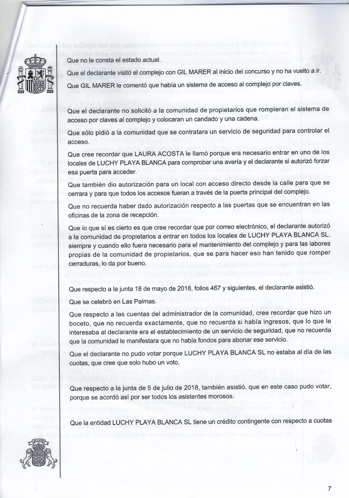
The witness denied asking for the coded access system to be broken and a chain and padlock installed. At the same time, he admitted authorising a forced door, closing another access and Community entry into all LPB premises; as to locks broken for that purpose: “lo da por bueno.”
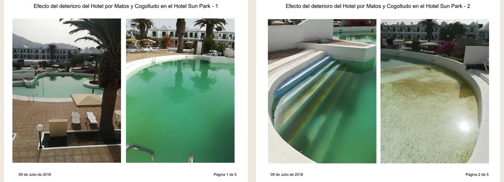
The images show pools and surfaces in visibly deteriorated condition. The dossier attributes causation to Matos and Cogolludo; that attribution must be tested against originals, metadata, maintenance records, the 7 June valuation and effective control. The photographs do not decide authorship by themselves, but the material consequence cannot be erased from the chronology.
Annex 4 · Public Prosecution Service
75 registry receipts. 11 destinations. One institutional-knowledge chain.
The annex preserves 75 RedSARA receipts from 15 December 2025 to 26 February 2026: Las Palmas Provincial Prosecution Office 45; Canary Autonomous Community Office 8; Arrecife–Lanzarote–Puerto del Rosario 5; Santa Cruz de Tenerife 5; Anti-Corruption 4; European Public Prosecutor’s Office 2; State Prosecutor General 2; and one each to Valencia, the Supreme Court Criminal Chamber, the National Court and the EPPO Support Unit. The concentration in Las Palmas identifies the principal channel; parallel routing records an express request for coordination and a non-fragmented reading: 75 receipts do not equal 75 independent corroborations. Each receipt does establish date, recipient and attachments formally notified.
Read as one chain, the reported harm is not confined to a private dispute: it connects still-open extra-insolvency proprietary displacement with RIC market integrity, tax treatment, investors, regional/EU finance and incentives, insolvency creditors, hotel employment and suppliers, guests, and confidence in public and judicial decisions. These are dimensions of possible public harm requiring investigation, not adjudicated offences. Continued commercial operation without an audited title, use, consent and income map makes the proprietary exposure current, not merely historical.
Minutes, representation, debt and certificates; evictions; the 18 April 2017 decision cancelling 2009–2015 levies; and continuity attributed to FMMM and Cogolludo.
Disclosure order, security and access, 7 June entry, signed ONA package, Stoneweg/Varia offer, Elaia/Lagune route, 13 June meeting, administrator action and omission, deterioration and alleged frustration of the exit.
Funds received, liquidation, off-concurso operation and distribution, Community liabilities, €25.6m valuation, adjudication and absence of one reconciled economic account.
RIC, CNMV, AEAT/ATC, public/EU funding and incentives, title representations, hotel continuity and evidence preservation before ordinary and specialist prosecution offices.
Contract, authorised-person list, communications, invoices, rosters, incident and access records.
Inspection, inventory, demand, report, court notice, protective measure, calculation and accounting.
What it received and served, which guarantee it required, what time it allowed and why no useful decision followed.
Failed objective condition, insufficient funding, unfixed debt, lost access or an evidenced combination.
Title, works, operation, income, RIC, public/private funding and successor patrimonies.
A documented explanation covering the whole sequence—not one selected episode—is invited.
Procedural objective: turn an apparently fragmented history into dated acts, concrete duties, identified documents and measurable consequences; obtain the appeal decisions; secure a complete account; and reopen or pursue the proper route when the evidential predicate exists—without presenting a registration, complaint, closure or appeal as a merits decision. DIP 79/2026 and DIP 80/2026 are separate professional-disciplinary files.
Contemporary press record · separate proceedings
Canarias7 published a Fiscalía accusation. Within days, the page was gone.
Documented publication and disappearance. On 30 May 2022, Canarias7 journalist Francisco José Fajardo published “La Fiscalía Provincial acusa a Acosta Matos de falsificación y estafa procesal.” A preserved browser copy is timestamped 31 May at 17:13. By 2 June at 09:17, a contemporaneous email and saved 404 record documented that the page was unavailable. The evidence therefore places the disappearance between approximately 39 and 79 hours after publication. The original URL still returns 404; no public correction, retraction, editor’s note or explanation has been located as at 11 August 2026.
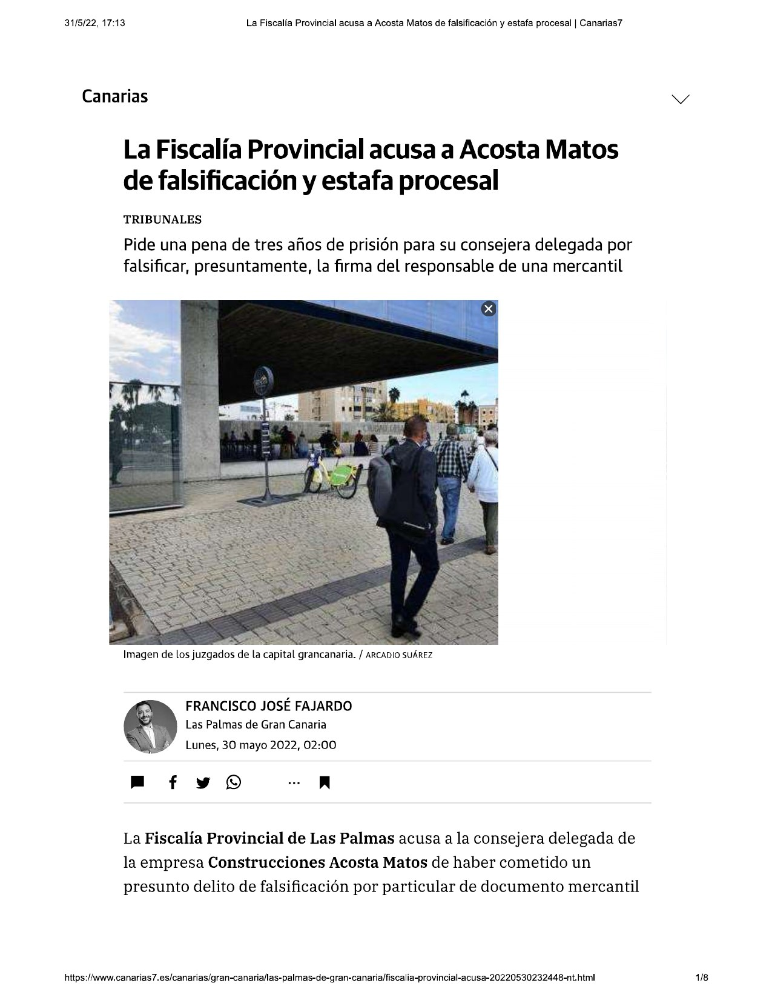
This is a direct render of the browser copy preserved on 31 May 2022—not an AI reconstruction. It shows the headline, photograph, author, publication time and opening text.
Open the independent web-archive capture →A prosecutorial allegation—not a verdict.
The report said the Provincial Prosecutor’s Office accused CAM’s managing director of alleged commercial-document forgery combined with attempted procedural fraud and sought three years’ imprisonment plus a €7,800 fine. It described a separate 2015 commercial dispute: a different version of a private contract, signatures said not to be the counterparty’s, handwriting evidence reportedly supported by Judicial Police experts, and alleged use of that document to induce judicial error.
Same corporate actor; a comparable alleged mechanism.
The article did not name the defendant. The official 2020 BORME entry identified Laura Patricia Acosta Matos as CAM’s managing director; the underlying charging document must complete the identity match. The matter is not Sun Park and proves neither propensity nor guilt. Its relevance is narrower and forensic: the same corporate environment and a reported sequence of altered documentary terms → simulated signature → use in court, comparable to the documentary-procedural pattern alleged in the Sun Park record.
Removal, source record and outcome.
- Who authorised removal, when, for what recorded reason, and after what communications?
- Was the report inaccurate? If so, why was no correction or retraction published?
- Which prosecution document and court proceeding supported the story, and what was the final outcome?
- Have Canarias7 preserved its CMS history, legal notices, correspondence, analytics and backups?
- Did CAM, its representatives, Fiscalía or any third party request or discuss amendment or removal?
Institutional proximity is an optics issue—not proof of influence.
The article’s own footer disclosed Canary Government support for local-press transport costs and Spain/FEDER transport support. In 2023, the Canary Government awarded Canarias7 its Gold Medal. These may be entirely lawful, ordinary relationships. They do not prove that CAM caused the removal, that Canarias7 was controlled, or that Fiscalía Provincial favoured anyone. But when a major regional outlet silently removes a report of a serious prosecutorial accusation and no accessible public outcome is found, those relationships make a documented explanation—not speculation—especially important.
What the scan supports: a rapid, unexplained disappearance; no public correction or explanation located; no reply located to a 6 June 2022 email that pointed the journalist to related allegations; and no publicly accessible disposition of the reported criminal case found. What it does not yet support: that Canarias7 or Fiscalía ignored a proved, focused request to explain the removal, or that Acosta Matos exercised influence over either institution. The preserved article and removal records are held in the evidence file; the full publisher copy is not republished here.
El Economista · 14–20 January 2025
A piece in preparation stopped after a requested wait and receipt of an adverse court order.
What the direct record shows. On 14 January Javier Romera confirmed that he had the material. On 16 January he wrote that the fund had to be named because it “contributed money and is the basis of everything”. On 17 January he expressly rejected censorship, but said he had been asked to wait until Monday for court orders. On 20 January he wrote that he had received an order declaring the insolvency culpable and disqualifying Gil, and that the outlet therefore could not publish. The sequence establishes preparation → wait → order received → non-publication. The direct emails do not identify who requested the wait or who sent the order.
Ownership, delay and Meeting Point.
In a contemporaneous recap sent to Romera on 19 January, the claimant recorded that Laura had allegedly asked for no publication until Monday, promised an order proving ownership, denied a marketing agreement with Meeting Point and at the same time acknowledged that Meeting Point had marketed the hotel “like any other tour operator”. It is a party record of a telephone conversation, not an independent transcript.
No relationship, no operation and marketing not performed.
The same recap attributed to unidentified Meeting Point representatives a denial of any CAM relationship and Sun Park operation, although they reportedly identified Canarian Hospitality, and an account that Club SEI marketing was contemplated but never performed. If confirmed, that position conflicts with the admission attributed to Laura. Speaker identity, recordings, contracts, inventory, bookings, invoices and flows are requested.
A grave conclusion that requires authorship and coordination evidence.
Gil Marer alleges that warning the counterparty, requesting delay, presenting incompatible accounts and using the order functioned as sabotage of publication. The record supports saying the piece stopped after the order was received and a prior wait was requested. It does not yet support stating who alerted CAM, who sent the order, whether Meeting Point coordinated with anyone, or that Romera lacked independent editorial judgment.
Audio files preserved; authentication pending.
The 19 January email was accompanied by three WhatsApp audio files referring to CAM, Meeting Point and non-publication. Their existence and filenames are preserved, but this record does not present them as verified transcripts until voices, context and continuity can be authenticated in full.
Right of reply: El Economista, Javier Romera, CAM, Laura Acosta Matos and Meeting Point are invited to identify the speakers, sender of the order, complete communications, editorial basis and their documented account. A verifiable response will be published with equivalent prominence.
The story in parts
From Sun Group creation to the present recovery.
Sun Park is built and opened around 1990.
José Sánchez Rodríguez/JSP developed Sun Park as part of Sun Group's early Playa Blanca hotel and apartment portfolio, alongside Sun Royal, Sun Beach, Sun Island and Sun Tropical. The exact opening date remains to be tied to a primary licence or opening record.
Property and operation are reported sold.
Alimarket reported a June 2008 agreement by Montelanza, S.L. to transfer the property and operation of the 220-apartment Sun Park to Israeli investor Multimatrix. The trade report is contemporaneous evidence, but its abbreviated entity descriptions must be reconciled with the contracts, deeds and Community statutes.
Aweswell enters; the Community dispute is already decisive.
Aweswell's filed directors' position is that it acquired Multimatrix's shareholder, creditor and related economic position. Aweswell says it then sought to build an over-50s leisure and longer-stay experience while dealing with a residual group of about 23% whose non-completion and control of Community organs allegedly frustrated the 2008 architecture. Gil places his alleged root-cause layer there; 22 June 2011 is the first located Community matrix, while Bankia’s enforcement and scheduled auction later became the documented immediate timing trigger for the 2012 insolvency. The acquisition and owner-by-owner completion matrix remain priority primary evidence. Controls and limits in Declaration 008.
Voluntary insolvency and an apparatus that continued.
LPB entered voluntary Concurso 36/2012. The present thesis does not claim Acosta Matos caused that filing. It asks whether the pre-existing Community apparatus, debt production and voting machinery was independently verified or instead allowed to operate against the company and productive unit.
Credit acquisition, access and operational displacement.
CAM acquired a Promontoria credit position in October 2017. The record then tests inspections, plans, Community authority, the 18 May 2018 meeting, security and access, works and the interruption of the Aweswell/LPB hotel operation. This is the principal conversion point in the allegation.
Project, investor and conveyance layers.
Lava Verde, Club Sei and the Sun Park RIC project appear in the later development chain. The February 2022 Community act, the insolvency administrator's report and Protocol 457 require a single source–use–beneficiary reconciliation: its six printed components total €13,065,186.68, and the €102,895.34 step to €13,168,082.02 is arithmetically attributable to the first-rank default-interest cap. The separate €400,000 branch must be traced independently; the former €12.768m + €400,000 decomposition is unverified.
Sun Park becomes the MYND Yaiza economic unit.
BORME records CAM's transfer by universal succession of the one-star Sun Park economic unit to Hotel New Trend for conversion into MYND Yaiza. The hotel opened in December 2022. CAM was totally split in 2023; in 2024 Grupo Patrimonial Acosta Matos became HNT's sole shareholder.
Recovery becomes a multi-route programme.
The work now separates property, creditor, cash, use-value, hotel-income, professional-liability, insurance, banking, regulatory and negotiated outcomes. No complaint or filing receipt is treated as a judgment, and no later company is made automatically liable merely because it sits in a successor or operating chain.
Public chronology sources: JSP and Sun Group history; Alimarket's contemporaneous 2008 sale report; 2022 BORME segregation to HNT; operator's December 2022 opening announcement; 2023 CAM total split; and 2024 HNT sole-shareholder filing. These sources prove only what each record states; they do not establish the alleged criminal mechanism.
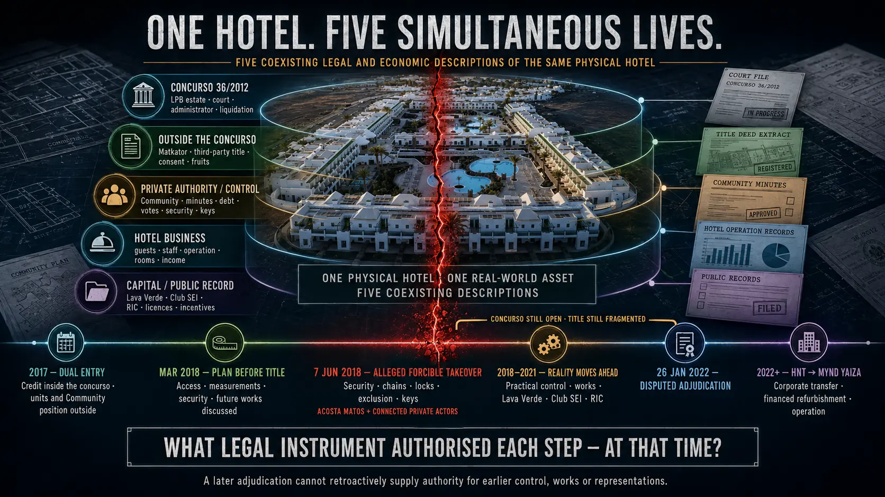
One hotel. Five simultaneous lives.
These are not five hotels or five unrelated disputes. Between 2017 and 2022, the same physical Sun Park coexisted as an asset in Insolvency Proceeding 36/2012, extra-insolvency units owned by Matkator and third parties, the object of disputed Community authority and private control, a live hotel business with guests and revenue, and a project presented to operators, investors and public authorities. The decisive question is which valid instrument connected each life to the next at the date of each act.
It acquired the secured credit in the insolvency route and units or positions connected with the Community outside it. Sun Park remained operational; CAM did not yet own the whole complex.
The certified conversation places that preparation before 7 June and almost four years before the 2022 adjudication. Its criminal significance remains unresolved; its existence prevents the change from being presented as something born only after that adjudication.
Photographs, complaints, communications and witness accounts describe security, chains, locks, exclusion, keys and loss of practical control. The question is what authority existed that day over LPB, Matkator, third parties, common areas and the business. No published final criminal judgment determines that attribution.
The chain combines recruitment for works in Playa Blanca in October 2018—which alone does not identify Sun Park—June 2019 instructions to a customer to remove belongings for refurbishment of the complex, the Lava Verde project, its Club SEI distribution and RIC financing. Licences, site diaries, contracts, invoices, certificates and unit-by-unit consent should now be produced.
LPB and the proceeding, Matkator and third parties, Community and control, hotel and revenue, and capital and public record coexisted over the same building. Minutes, possession or expectation did not acquire another plane's legal powers by repetition.
The objections concern the credit and liquidation accounting, valuation, Community authority, prior possession and works, restoration after non-validation, third-party property, funded alternatives, the insolvency administrator's conduct and effective judicial protection. HNT and MYND later normalised operation; they did not retrospectively reconcile every bridge.
Reading rule. Documented facts for dates and representations; attributed allegation for the forcible takeover and criminal mechanism; investigation remains necessary for intent and individual responsibility. CAM, HNT, the private actors, insolvency administrator, operators and authorities are invited to produce the contemporaneous instrument that authorised each step.
Recovery objectives
- Recover assets, control, income, business value or lawful substitute value for the correct claimant.
- Build one chronology and a traceable evidence index.
- Secure independent scrutiny and correct documented errors.
- Pursue criminal, civil, insolvency, regulatory, professional, insurance or negotiated routes without double recovery.
Strength without distortion
- Presumption of innocence and a right of reply.
- Personal data and reserved material kept off the public site.
- Forceful attribution: the criminal allegation is stated as the claimant's allegation, not disguised as established guilt.
- Visible corrections when a reliable source requires them.
- Document
- Allegation
- Inference
- Open question
- Official outcome
Institutional record
What institutions did. What they did not decide.
This selection is not a collection of logos and does not imply institutional support. It publishes official acts that verify receipt, review, competence, referral or information access, always with their evidential limits.
Official response
The Commission reviewed the filing and agreed a limited referral.
Intervención General response 184368/2026 confirms that the 15 December 2025 filing was considered at the 24 February 2026 meeting of the Commission for Public Integrity and the Fight against Corruption. The Commission agreed an anonymised referral to the Vice-Ministry of Justice, limited in particular to the assertion that assets under judicial or insolvency protection might be materially disposed of or concealed without the required authorisations.
Response 497011/2026 later defined Intervención's competence, stated that it had no open control file, recorded its position on the RIC suitability declaration and referred the facts to the Vice-Ministry of Finance and European Union Relations with a warning to protect personal data and the reporting person.
What it establishesCommission review; competence and referral decisions; the scope stated by Intervención General.
What it does not establishIt finds no irregular disposal, fraud, crime, tax breach, misuse of funds or personal responsibility.
Primary document · 6 pages
Intervención General: responses 184368/2026 and 497011/2026
Official responses registered on 6 March and 11 June 2026. The public copy contains only the six official pages extracted from the annex; the recipient's private home address has been removed.
Read the public copy (PDF, Spanish)
Partly upheld · 9 pages
Transparency Commissioner: R2026000054
The resolution treats the requested material as administrative and public information, distinguishes completed documents from an open file and identifies three municipal files: 7043/2022, 7059/2022 and 10356/2022. It orders delivery of their document lists within fifteen working days.
Limit: the resolution concerns access to information. It does not validate allegations about works, title, authority or responsibility.
Read the complete resolution (PDF, Spanish){kind=link}
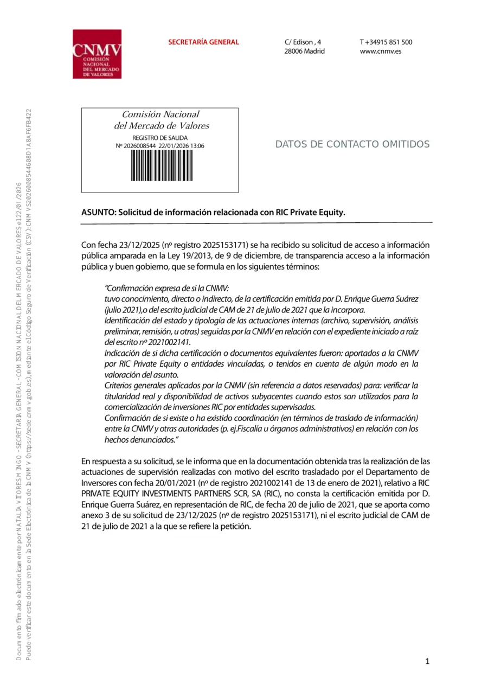
CNMV confirms supervisory actions and one specific documentary absence.
The response says supervisory actions were carried out following the filing registered on 13 January 2021. The material obtained did not contain Guerra’s certificate of 20 July 2021 or CAM’s 21 July court filing that enclosed it.
Scope: this proves supervisory activity and that absence from the material obtained; supervisory secrecy protects the remainder, it is not a sanction, and it does not decide whether the 2020 representations were false or criminal. The direct image redacts the recipient’s home and email address.
A competence referral was made on 11 June. A 10 August transparency decision denied the requested access; an appeal was registered on 11 August. This remains separate from any merits determination.
In 2021 it referred the filings to the competent department; in 2026 it confirmed supervisory actions and that two July 2021 documents were absent from the material obtained.
The 13 January 2021 AEAT registration proves a tax complaint concerning RIC materialisation. No substantive AEAT or ATC merits response or complete suitability file was located.
On 10 August 2026 the National Court Prosecutor notified its withdrawal in favour of, and referral to, the Arrecife-Lanzarote-Puerto del Rosario Area Prosecutor. This is a competence decision, not a merits finding.
Source policy: receipt, registration, opening, closure, referral and appeal are different states. None will be described as institutional endorsement or proof of guilt. New sources will be published only when their public value outweighs the risk of exposing personal, tax-confidential, privileged or procedurally sensitive information.
Public traceability · present power
Institutional accountability map
This is not an allies wall. It identifies who was told, who can decide, what response is on record and which finite act remains outstanding. Priority follows present ability to change the outcome—not filing volume.
356records
77distinct CSV destination labels
7 Dec 2025first record
12 Aug 2026last verified
317 received25 rejected14 sent
Count control, 12 August 2026: all 356 records were reconstructed using the date and time as the anchor in the 106 rows containing more than the 16 declared fields. The result is 77 distinct exact values in the CSV’s “Órgano Destino” field. Display names below are normalised for readability; the number of rows is not a count of separate legal persons.
Registration establishes traceability and notice. “Received”, “rejected” and “sent” are transport states. Only a separate decision can establish action, inadmission, closure, investigation or a merits outcome.
F official/primary factR representationP prior allegation/filingI inferenceQ open questionX material contradiction
Twelve priority records
Who can now make a material difference
Each card separates act, limit and request. Gil Marer alleges that fragmentation and institutional hand-offs have protected an unreconciled patrimonial result; this structure tests that allegation without converting referral or silence into exoneration.
Complete directory
Destination directory, grouped by function
The number at the end of each row is the RedSARA filing volume—not a measure of support, competence, activity or merits.
Institutional names, marks and records identify competent or contacted public authorities and professional corporations. They imply no support, affiliation, endorsement, awareness or acceptance of the allegations. Selecting one of the eleven identifiers opens this site’s concise, source-controlled record; an official-site link is provided separately within each record. The complete 77-destination directory retains neutral typographic tiles so that transport records do not become a logo wall or suggest relationships the register does not establish.
Public method
Rigour before volume.
The public site will intentionally be smaller than the working record. Every publication must pass relevance, provenance, privacy, proportionality and legal-risk checks.
What we will publish
- Chronologies supported by reviewed documents.
- Decisions and procedural states with adequate context.
- Specific questions capable of verification or response.
- Corrections, clarifications and status changes.
What we will not publish
- Protected legal strategy, privileged communications or reserved tax information.
- Private addresses, personal identifiers or unnecessary personal data.
- Anonymous accusations, claims without an identifiable source chain, harassment language or calls for extra-legal confrontation.
- Claim, valuation or return figures that are unaudited and not cleared for disclosure.
Material updates
What changed, why it matters and which record supports it.
A dated, bilingual living record. Corrections, new documents and material procedural changes receive permanent links; purely visual adjustments do not fill this channel.
Published
Latest material update
Notifications active: the Updates page and its Atom feed allow readers to follow material entries as they are published.
DIP 2/2026 and judicial complaint: complete, traceable publication
The notice and Decree of the Canary Islands Autonomous Community Prosecution Office can now be read beside their controlling passages and the judicial route that the notice itself preserved. The page publishes the stamped copy and complete principal pleading signed on 17 and presented on 18 June, together with the complete 25 June amplification and page-accounted transcriptions. Daily reference no. 24 is used only as a material registry link; it is neither a NIG nor a confirmed proceeding. As attributed allegations, the page connects private-actor and insolvency-administrator conduct with the alleged acts or omissions of the Judge, and makes a public call for an independent audit without presenting capture, collusion or an offence as proved.
Causal hierarchy and Garrigues clarification fixed
Gil distinguishes the structural vulnerability created in 2008, the root cause he attributes to alleged non-completion or breach and relevant later acts or omissions of the perimeter associated, in specific acts, with Montelanza, S.L. and Molina-linked owners, the first located Community matrix dated 22 June 2011, and Bankia enforcement/auction as the documented immediate timing trigger in 2012. He also recalls that Garrigues recommended the Monterecco route, requests its evidence and records custody, and records 28 March 2012 as the firm’s first currently verified activity—after the 1/6-February instruments. These are attributed positions, not adjudicated findings or acceptance by the firm. Naming it neither publishes nor indiscriminately waives confidential communications, which remain subject to document-by-document legal review.
CEXP title, the 2012 cession and Pink’s alleged “abandonment” corrected
Among the materials reviewed, CEXP is the only entity for which both a participating-owner collective resolution and a direct transfer from Montelanza, S.L. have been located. That is documentary provenance, not a finding of lawful exclusivity, universal mandate, registry status or uninterrupted operation. The bilateral cession to Monterecco/Pink and its official 159-unit/477-bed perimeter are disclosed, while authority and scope remain open. Order 804/2018 is accurately identified as affirming provisional criminal archive: it did not find total abandonment after trial or determine operator title.
Complete reverse-engineered causal story published
The homepage now connects the MYND Yaiza outcome to institutional notice, RICPE representations, the 2018 material takeover, credit and particular properties, PwC/Community knowledge, the first located 2011 Community matrix and the 2008 structural vulnerability with the alleged root cause separated. Three routes let readers understand in five minutes, verify in 30–60, or audit for an hour or more.
DIP 2/2026: documented appeal-status error published
The Decree said no appeal was recorded on 2 March. Court records dated 28 January and 18 February had already documented the filing, registration and processing of RPL 3319/2025. The complete 11 March communication is published beside an explanation of its significance and limits.
Law 2/2023: formal routing to the Canary Islands Government's internal system
Communication REGAGE26e00065752755 was transferred to the Directorate-General for Modernisation and Service Quality for the purposes of Law 2/2023 and Decree 91/2024. The signed and registered receipt establishes the transfer and outgoing record 681432/2026; it does not determine the merits or find an infringement.
AC and judge journey made static and directly navigable
The five private actors now precede a static insolvency-administrator and judge section in both languages. A visible navigation tab and three-step reading route link directly to it; neither version depends on JavaScript to display the institutional cards.
02 · future
A hospitality platform with a clear core—and hard boundaries.
Project Sun Rock is carrying forward its operating intelligence into new, unaffected assets. The core strategy is to develop, redevelop, reposition and operate hotels and resorts. Adjacent accommodation qualifies only when it has a demonstrable operational or economic nexus to the hotel ecosystem.
Hotels and resorts
Development, redevelopment, repositioning and operation across suitable destinations, guest profiles and formats. Control of the hospitality proposition, operating logic and route to demand—not a predetermined key count—is the governing test.
Grown-up lifestyle and longer stays
Community-rich adult and longer-stay concepts where destination demand and operating economics support them. This carries forward proven know-how without making every future hotel adults-only or age-restricted.
Hospitality-led extended stay
Accommodation designed as a genuine alternative to a prolonged hotel or resort stay, sharing service standards and—where appropriate—amenities, distribution, programming or demand with the hospitality operation.
Workforce accommodation
Well-located accommodation that directly supports hotel staff, destination operations and the visitor economy. It qualifies because it strengthens hospitality delivery, not because it is residential property.
Shared ecosystem, measurable fit
An adjacent project must substitute for hotel demand, support a hotel operation, or share meaningful services, amenities, distribution or customers with it. A marketing label alone is not enough.
Value realised in support of the platform
If an opportunity has no operating fit, it may be considered only as an enabling financial asset whose realisation directly supports hospitality development or expansion. It will be described and governed as such—not presented as part of the operating portfolio.
Filter
Sector fit, real utility and legitimacy of purpose.
Verify
Title, permits, counterparties, conflicts and execution risk.
Structure
Visible governance, capital, controls and responsibilities.
Build
Measurable milestones, transparency and durable stakeholder value.
Transaction discipline: projects are pursued one asset at a time through ring-fenced project companies or joint ventures, appropriate diligence, definitive agreements and fit-for-purpose capital. Recovery rights and new-project underwriting remain legally and financially distinct unless a documented transaction connects them. Sites, sellers, counterparties, economics and negotiations remain private until control and disclosure rights are secured.
Who this is for: a handful of hotel/property entrepreneurs, high-net-worth principals and single-family offices already allocating proprietary capital to real estate or hospitality. It is not directed to the public or retail investors. No asset is presented as secured or controlled until it is.
A low-friction first step
Test fit before exchanging a data room.
A private 15-minute conversation can establish mandate, sector fit, geography, cheque range, decision process and whether either side can add more than capital. If there is credible fit, a concise controlled brief follows. If not, the conversation ends cleanly.
03 · public impact
Fundación Por Derecho, planned.
A separate initiative designed to strengthen access to justice, legal literacy and institutional accountability. Its intended seat is Las Palmas de Gran Canaria, subject to incorporation, endowment, governance and registration.
Proposed initial programme
- Accessible legal information and civic education.
- Tools for organising and understanding complex records.
- Research and proposals for institutional improvement.
- Pro bono networks and responsible referral, when capacity exists.
Boundaries before registration
- It is not yet a registered foundation.
- It does not give legal advice or act as a law firm.
- It does not accept reports, cases, evidence or public funds.
- It does not fund litigation or own private claims.
Accountability
A platform, not a legal fiction.
Project Sun Rock is a working name used to coordinate distinct paths. It is not presented as a legal person, law firm, fund, registered foundation or investment vehicle.
Identity and mandate
Gil Marer is the sponsor and responsible author of this site and states that he is a directly affected party to the matters documented. He publicly identifies as a reporting person/whistleblower and invokes any protections that may apply under Spain's Law 2/2023, European Union law and United Kingdom law. About Gil and the group →
The applicability and scope of those protections depend, among other requirements, on subject matter, the work-related or professional context, the reporting channel and the conditions of the disclosure. This statement does not assert that an authority has already recognised a particular legal status.
Institutional separation
Each activity must clearly identify its responsible entity, governance, funding, conflicts and regulatory obligations. No corporate or control relationship should be inferred until expressly published.
Collaborate
We seek judgement, not an echo.
We welcome legal, forensic, journalistic, institutional, governance and development input that can test facts, identify errors or help build a legitimate solution.
A good fit can…
- bring independent, disclosed expertise;
- work with confidentiality, conflict controls and traceability;
- challenge our interpretation with evidence;
- help turn findings into lawful and ethical outcomes.
We do not seek…
- harassment, personal pressure or extra-legal action;
- publication of private data or unlawfully obtained material;
- uncritical adherence to one account;
- capital or services without identity and source checks.
NEW EXPERT-EVIDENCE NODE
David Espejo / eXW: version, custody, filing and judicial use
Four signed finals, two identified annexes in LPB’s opposition and a pre-hearing court-file version issue, with express evidential limits.